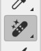
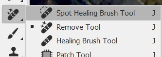
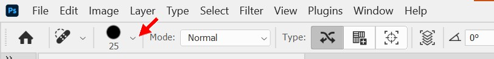
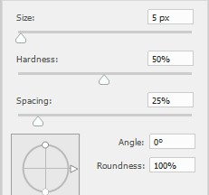
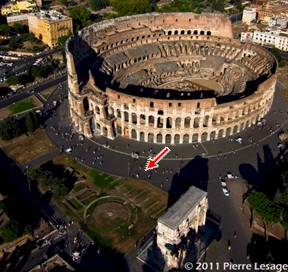
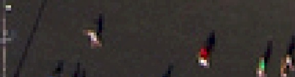
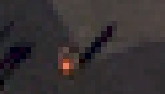

|
Introduction |
Method 1: Brush/Pencil | Method
2: Spot Healing Brush | Method 3: Healing Brush | Method
4:
Patch | Method 5: Content-Aware Move |
| Method 2: Spot Healing Brush Tool |
Up next, we will take a look at the Spot Healing Brush Tool. With this tool, we simply need to draw over an item that we want to remove and Photoshop will look at the surrounding area and use that to cover the item. This tool will work great with our current image, especially on areas where a person is surrounded by concrete. Let's get some practice.






A word of warning: the process does not work very well when there are lots of other objects nearby or if the item being removed is near an edge. For example, if we try to remove the person below with the Spot Healing Brush...

We end up with this...
See how the light gray area now has a bite taken out of it? While it is easy for you and I as people looking at the image to see that the light gray area is actually a corner, Photoshop has no way of knowing what the content of our image is. Photoshop has simply identified that there is a lot of dark gray around what we are trying to remove and is using that dark gray color to fill in the area. Use the Spot Healing Brush Tool carefully. It can be an amazing tool for quickly and easily removing objects, but if the object is not alone, by itself, and in the open, it can distort the surrounding area and be more of a problem than a help.
Go around the image and remove any people that are out in the open by themselves that would be easy to remove using this tool - do not try to remove anyone that is close to other people, close to buildings, near lines, or anything else like that
If you try to remove a person or object and you end up with some sort of distortion, simply undo your action and move on to a different person. We will deal with crowds, people near buildings and lines, and anything else that the Spot Healing Brush Tool is unable to remove in the next few Steps. Keep in mind that there is a way to remove and/or replace everything in an image, it's just a matter of using the right tool.
Let's save our work up to this point.
In the next step, we will switch from the Spot Healing Brush Tool to the Healing Brush Tool. They sound similar, and do actually work in much the same way, but there is a very distinct difference. Go on to the next step to find out what it is.